用可学习二元单元辨识神经网络中的局部计算结构
摘要
人工神经网络通常对输入求加权和，再施加预先指定的一元激活函数。该设计把单个计算单元内部的特征交互固定在架构中。受树突区室整合多路输入的现象启发，我们考察一个由全网共享的两输入小网络 InnerNet，使局部函数 fθ(a,b) 随外围网络共同训练。图像分类、自编码、语言建模、循环记忆和强化学习实验显示，InnerNet 的效果依赖任务、架构和模型规模。在两个受控 Transformer 宿主中，双线性宿主的 20 个条件均恢复乘法，SwiGLU 宿主的 20 个条件均恢复 SwiGLU 类函数；该结果限于所测的两类宿主及初始化。冻结外围网络后，InnerNet 在一个 WikiText-2 设置中把已训练 SwiGLU 解的困惑度保持在报告精度下。将 CNN 中学到的函数替换为固定三阶多项式后，吞吐提高 2.68 倍，但准确率下降 3.63 个百分点，且未融合实现仍比 SwiGLU 慢。以上结果支持把共享二元函数作为局部算子探针：它可用于读取已训练网络附近允许的交互形式，并为后续公式拟合与独立验证提供候选结构。树突计算在本文中提供结构动机；本研究没有新增生理实验。
1 引言
现代神经网络通常把单个神经元写成线性变换与标量非线性的组合。ReLU、GELU 和 SiLU 只接收一个聚合后的标量，不同输入通路之间的促进、抑制和门控主要由网络连线实现。生物神经元具有局部区室。基底树突、顶端树突及其分支接收来源不同的输入，并在细胞体放电前进行非线性整合。人类皮层神经元的树突事件还表现出 XOR-like 的计算特征 [1][2]。这些现象说明，多输入局部非线性是值得研究的计算形式。
Yoon 等人提出了两参数激活函数 [1]。他们用共享的小型多层感知机替代固定激活，使每个神经元联合变换两路线性投影。在 MNIST 和 CIFAR-10 的 MLP 与 CNN 中，训练后的函数常呈现软 XOR 或门控形态；相应模型在部分设置中学习更快，并对自然扰动和对抗扰动更稳健。原研究集中于前馈图像分类，也已经讨论了二次多项式近似。它没有检验这些函数在现代架构中的表现，也没有通过替换已经训练好的宿主算子来区分初始化与外围网络状态的影响。多项式拟合后的任务性能和实际吞吐同样没有测量。
本文沿用共享二元 InnerNet，并把训练后的函数作为分析对象。训练期间，小网络可以表达乘法、门控、软 XOR 及其他二维变换。训练结束后，我们直接绘制函数表面，并用候选闭式算子拟合。这个设置只搜索网络中反复调用的局部函数，范围小于全局架构搜索。它也不需要在训练前枚举完整的离散公式库。
实验先复核原论文的分类结果，再把二元函数放入自编码器、语言模型、循环网络和策略网络。收益并不一致，且更大模型中的现有 scratch 运行尚未补齐全部计划种子。随后，我们在双线性与 SwiGLU 宿主中替换局部算子。恢复的函数族随宿主变化，却在所测初始化之间保持稳定。冻结宿主的实验表明，InnerNet 至少能在一个设置中近似已经训练好的 SwiGLU 解。固定多项式替换则量化了精度与吞吐之间的损失。这些实验把 InnerNet 的用途限定为已训练网络附近的局部算子辨识，而没有把它当作可直接部署的通用激活函数。
1.1 相关工作
可学习激活函数对函数自由度有不同取舍。PReLU 只学习负半轴斜率 [4]。Padé activation 和 spline activation 允许一元曲线随训练改变 [10][11]，ACON 与 Attention as Activation 还利用输入状态或局部通道上下文 [8][9]。KAN 在网络边上学习一元 spline，并在训练后剪枝和符号化 [12]。Network In Network 则用局部小型 MLP 增强卷积计算 [3]。本文保留一个全网共享的二元标量函数，以便直接检查乘法、门控和 XOR-like 交互。
激活函数和局部算子的搜索已有直接先例。Ramachandran 等人从预先规定的 primitive 组合中得到 Swish [5]，PANGAEA 结合进化搜索与梯度优化，得到随架构变化的参数化激活 [6]。EvoNorm 搜索归一化与激活的联合结构 [7]，DARTS 和 AutoML-Zero 分别把搜索扩展到网络操作与学习算法 [13][14]。这些方法大多依赖预定义的操作或公式图。InnerNet 优化连续的二维函数，之后再分析其低阶结构；它处理的对象更窄，也没有离散化全网拓扑。
LSTM、GRU、GLU 和 SwiGLU 都用乘法交互控制信息流 [16][17][18][19]。相关研究还用乘法交互统一描述 attention、hypernetwork 和动态卷积 [20]。因此，本文在 SwiGLU 宿主中恢复 SwiGLU 类表面，只能视为对探针灵敏度的验证。该实验没有得到一个未知的新算子。
Equation Learner 在数学 primitive 上学习稀疏方程 [25]；Cranmer 等人先训练具有物理归纳偏置的图网络，再对内部模块做 symbolic regression [24]；KAN 也把训练后的 spline 转成已知函数 [12]。本文沿用从神经模块提取公式的思路，对象是网络内部重复调用的共享二元算子。宿主替换实验用于检查提取结果是否随外围网络的既有计算状态变化。
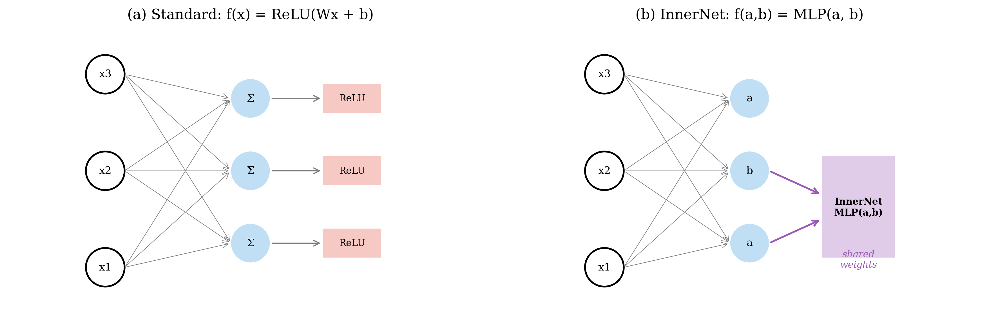
图 1｜共享二元 InnerNet。 标准单元对单个加权和施加固定非线性。InnerNet 接收两路线性投影，并用共享的小型网络计算 fθ(a,b)。 参数共享使同一个局部计算规则在多个神经元和层中重复出现，也使训练后的二维函数能够被单独分析。
2 结果
2.1 MLP 与 CNN 分类结果复核
我们先复现原论文的 MLP 与 CNN 分类设置。四个主要任务中，二参数模型的平均准确率都高于对应的 ReLU 基线，差值在容量受限的 MLP 和 CIFAR-10 CNN 上较大。CNN CIFAR-10 中，二参数模型为 78.57±0.74%，ReLU 为 73.99±0.49%。把 LayerNorm 加到相同位置后，ReLU 达到 75.14±0.34%，仍低于二参数模型。同一设置下的 PReLU 和 SiLU 基线也低于二参数模型，因此这里的差值不能仅归于 LayerNorm、可学习负斜率或激活平滑性。
| 任务 | 二参数 InnerNet | ReLU | 绝对差值 |
|---|---|---|---|
| MLP，MNIST | 98.0% | 91.9% | +6.1 |
| MLP，CIFAR-10 | 52.1% | 49.5% | +2.6 |
| CNN，MNIST | 99.41±0.04% | 99.02±0.03% | +0.39 |
| CNN，CIFAR-10 | 78.57±0.74% | 73.99±0.49% | +4.58 |
差值通常在训练早期出现。在若干设置中，二参数模型达到同一性能阈值所需的 epoch 数约为基线的四分之一到二分之一，这与原论文的学习曲线一致。FashionMNIST 和 SVHN 给出了边界：一参数版本的平均准确率略高。二元局部函数会影响早期优化，但分类实验没有确定一个适用于所有数据集的二元形式。
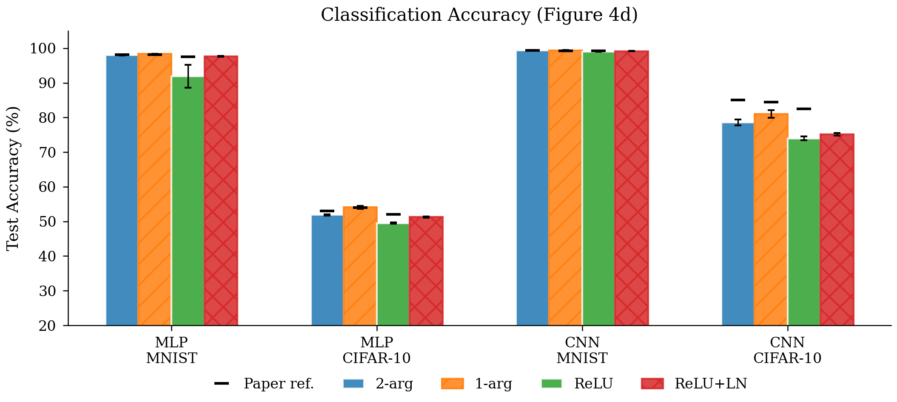
图 2a｜原论文结果复核。 三项任务的相对方向与原论文一致。CNN CIFAR-10 仍有相对优势，但绝对精度低于从原论文曲线读取的数值。
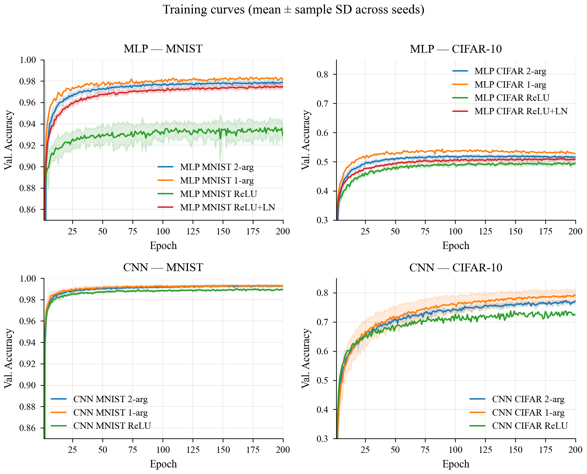
图 2b｜多随机种子训练曲线。 所有模型均显示前 200 个 epoch。同一设置的均值曲线按最短 seed 截断，没有对提前结束的记录补平。阴影表示跨种子的离散程度。二参数模型与基线的差值主要在早期形成。
2.2 其他架构中的结果与边界
我们把 InnerNet 放入自编码器、Transformer 前馈层、LSTM 和强化学习策略网络。自编码器的结果较为一致：MNIST、FashionMNIST 和 CIFAR-10 的平均重建误差分别下降 43%、12% 和 23%。WikiText-2 的四个小型 Transformer 宽度中，InnerNet 的平均困惑度均低于 GELU；在 d=128 时，两者分别为 95.26±1.00 和 96.82±1.19。LSTM 的差值较小，InnerNet 和标准模型分别为 103.41±0.83 与 104.38±0.75。强化学习中，Acrobot 的配对差值为 21.7 return，配对 t 检验 p=0.0036；LunarLander 没有检测到差异。
| 任务 | 固定基线 | InnerNet | 结果 |
|---|---|---|---|
| MNIST 自编码 | 0.0068 MSE | 0.0039 MSE | 误差下降 43% |
| CIFAR-10 自编码 | 0.0105 MSE | 0.0081 MSE | 误差下降 23% |
| Transformer，WikiText-2，d=128 | 96.82±1.19 PPL，GELU | 95.26±1.00 PPL | 困惑度下降 1.6% |
| LSTM，WikiText-2 | 104.38±0.75 PPL | 103.41±0.83 PPL | 困惑度下降 0.9% |
| PPO，Acrobot | ReLU 基线 | 高 21.7 return | 配对检验 p=0.0036 |
这些实验扩大了原论文的任务范围，也显示出明显的架构依赖。在 Transformer 中，InnerNet 在 d=64,128,192,256 的同宽度比较中平均困惑度低于 GELU，但没有超过 SwiGLU。d=192 和 d=256 的配对差异没有达到显著水平。更大的 GPT scratch 实验目前只完成 3/5 个计划种子，已有运行中 InnerNet 落后于 GELU 和 SwiGLU。该结果提示更大模型中的联合优化困难，但样本尚不足以确定规模趋势。
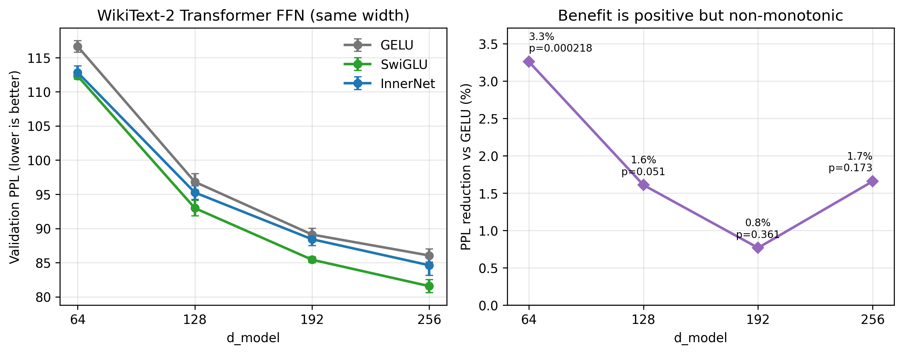
图 3｜Transformer 规模与测试困惑度。 四个 WikiText-2 宽度上，InnerNet 的平均困惑度低于 GELU，且高于 SwiGLU。GPT 设置只完成 3/5 个计划种子，图中数值用于展示当前趋势，不作为完整的规模结论。
2.3 冻结宿主与 warm-start 区分表示和优化
SwiGLU 属于 InnerNet 可以近似的二维函数族。为检查从头训练的差距是否完全来自函数容量，我们在 WikiText-2 d=128 中先训练 SwiGLU 网络，再把局部算子替换为 InnerNet。冻结外围网络并只训练 InnerNet 时，两者最终困惑度在报告的两位小数下均为 77.38。这个数值相同不构成统计等价性检验，但说明 InnerNet 在该宿主上能逼近已有的 SwiGLU 解。允许外围网络共同调整后，五个种子的平均困惑度为 76.85；继续训练 SwiGLU 的分支为 77.04。
同一 warm-start 协议覆盖 11 个架构与任务，InnerNet 在 10 个设置中的平均指标优于或接近 SwiGLU，LSTM 是明确较差的设置。scratch 对照尚未补齐所有计划种子；当前完成的运行中，不同初始化的 InnerNet 通常比 SwiGLU 高 1-3 个困惑度点。冻结宿主和 warm-start 结果说明训练路径会影响最终性能。该结论限于所测架构，也没有确定其他设置是否需要 warm-start。
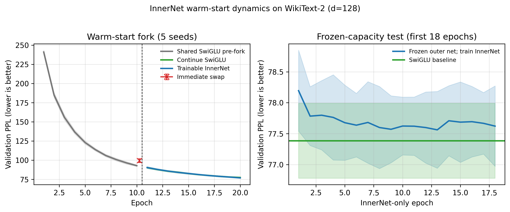
图 4｜优化路径与容量分离。 左图从同一个 SwiGLU 检查点分叉，分别继续训练 SwiGLU 或改用 InnerNet。右图冻结外围网络，只优化 InnerNet。在这一设置中，InnerNet 能保持已有解，说明从头训练的性能差距至少有一部分来自联合优化。
2.4 受控宿主中的局部算子恢复
为区分初始化与外围网络状态的影响，我们构造了两类宿主网络。第一类用固定双线性算子 a·b 完成训练，第二类用固定 SwiGLU 完成训练。随后用 InnerNet 替换固定算子，并改变 InnerNet 的初始函数与训练方式。一个条件对应确定的宿主类型、训练方式、InnerNet 初始化和随机种子。
| 宿主网络 | InnerNet 训练方式 | 初始函数 | 随机种子 | 条件数 | 最终函数 |
|---|---|---|---|---|---|
| 双线性宿主 | 联合训练或冻结外围网络 | 随机、乘法 | 5 | 20 | 20/20 判为乘法；分组平均 R²=0.9976-0.9993，逐条件 R²=0.9949-0.9996 |
| SwiGLU 宿主 | 联合训练 | 随机、恒等、乘法、SwiGLU | 5 | 20 | 20/20 判为 SwiGLU；分组平均 R²=0.9853-0.9912，逐条件 R²=0.9830-0.9938 |
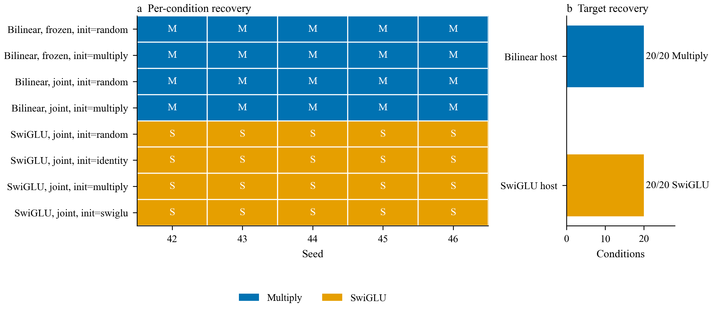
图 5｜两类宿主中的算子恢复。 每个单元格对应一个随机种子和一个探针设置。双线性宿主的 20 个条件均按乘法与 SwiGLU 的 R² 比较判为乘法，SwiGLU 宿主的 20 个条件均判为 SwiGLU。M 和 S 分别表示 Multiply 与 SwiGLU。
两类宿主在这 40 个条件中完全分开。相同的 InnerNet 初始化进入不同宿主后得到不同的函数族；同一宿主中的所测初始化得到相同标签。因此，初始化本身不足以解释所有结果。由于实验只包含双线性和 SwiGLU 两类宿主，我们还无法分离表示、尺度与梯度场各自的作用。这里观察到的是宿主条件性，其范围由这两类宿主限定。
训练后的二维表面需要结合宿主解释。这里可以把替换协议理解为一种局部算子辨识：给定已经工作的网络，允许局部函数变形，再检查训练保留了什么结构。本文没有建立系统辨识中的可辨识性条件，也没有证明恢复函数是宿主附近的唯一解。该协议目前用于检验已知算子能否被恢复；若要比较任务或层之间的交互形式，还需要更多宿主类型和独立重训。
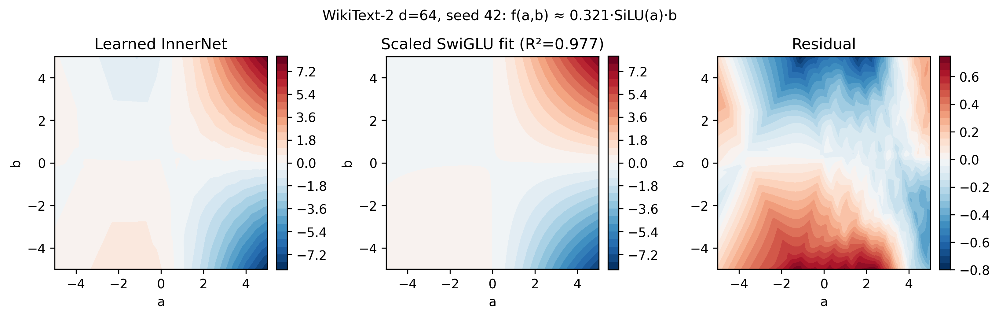
图 6｜二维函数的结构读取。 一个 Transformer 检查点中的 InnerNet 可由缩放 SwiGLU 项解释 97.7% 的方差。单个表面只能说明该检查点的拟合情况。图 5 进一步比较了两类宿主、多个初始化和五个随机种子。
2.5 InnerNet 隐藏宽度与运行成本
我们在固定的 WikiText-2 d=128 设置中只改变 InnerNet 的隐藏宽度。h=8、16、32 和 64 的平均困惑度依次为 96.17、95.76、95.26 和 95.09。h=64 相对 h=32 的平均差值为 -0.17 PPL。四档 Friedman 检验为 p=0.392， 没有检测到总体差异。预设 ±1 PPL 边界的 TOST 也未建立严格等价。h=64 的训练时间为 h=8 的 4.86 倍。
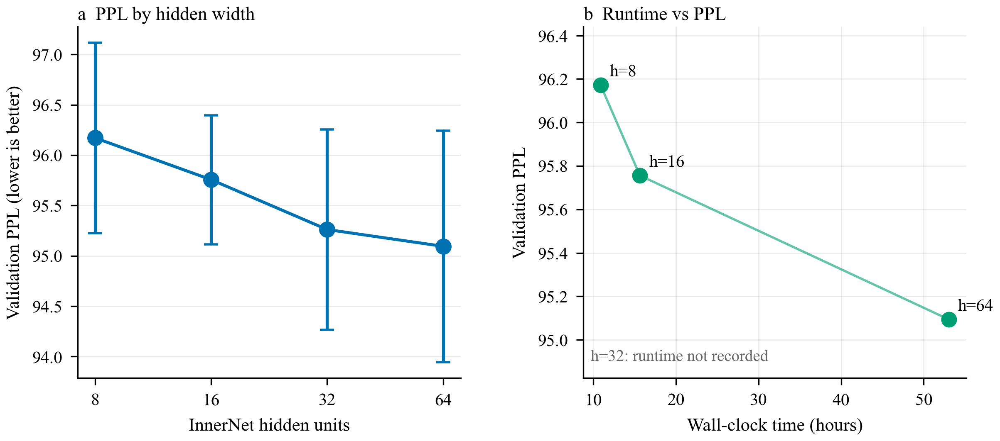
图 7｜隐藏宽度与计算成本。 左图给出五个随机种子的均值与标准差，右图只显示有完整 wall-clock 记录的设置。h=32 复用了较早的 canonical 结果，没有可比的总运行时间，因此右图不包含该点。
在当前设置和五个随机种子下，增大隐藏宽度带来的平均差值较小，而运行时间明显增加。统计检验既没有检测到四档差异，也没有证明它们等价。因此，这项消融支持把较小宽度作为成本较低的选择，但不能确定任务所需的最小容量。
2.6 二元交互可以补充循环网络的加法记忆
在 Sequential MNIST 中，我们构造了带显式加法记忆通路和二元 InnerNet 的紧凑循环单元。九次实际进入训练的运行中，八次完成，平均准确率为 98.44±0.22%；另一次在第 17 个 epoch 出现数值不稳定。完成的模型约有 2.1 万个参数。该结果表明，在这一结构中，加法记忆通路与可学习二元交互可以共同支持序列分类。
训练后二维函数没有稳定拟合为标准 sigmoid 门。该实验只提供功能证据：模型完成了序列计算，但现有拟合不能把性能归因于唯一的门控表面。单个二维图形不足以命名循环机制，仍需结合外围状态表示和干预实验。
2.7 固定公式替换的精度与吞吐代价
InnerNet 的共享参数很少，profiled FLOPs 只比 SwiGLU 高约 17%，但逐元素小 MLP 会产生多个未融合 kernel 和中间张量。在同一块 RTX 2080 Ti 上，当前 InnerNet 实现的 CNN 与 Transformer 前向时间分别是 SwiGLU 的 17.33 倍和 12.02 倍。该实现不适合直接作为高效部署算子。
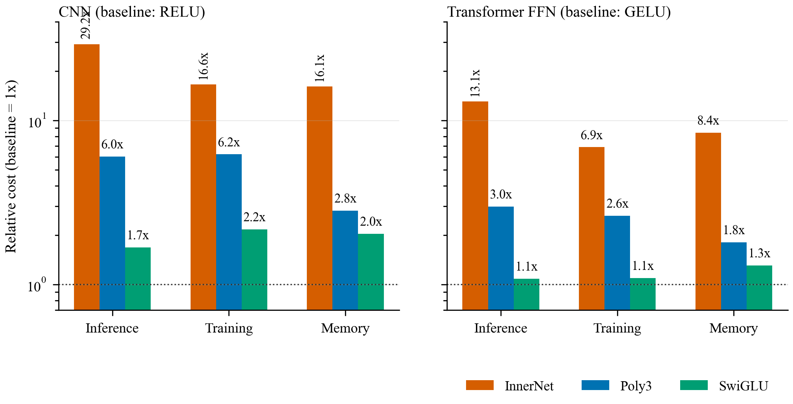
图 8｜当前实现的计算成本。 CNN 以 ReLU、Transformer FFN 以 GELU 为 1 倍基线。Poly3 是当前未融合的三阶多项式实现。图中测量只描述现有实现，不能外推融合 kernel 的速度。
在 CIFAR-10 CNN 中，我们把训练后的二维表面拟合成固定三阶多项式并实际替换原模块。吞吐从每秒 1,622 张提高到 4,345 张，准确率从 84.95±0.57% 降至 81.32±0.32%。固定多项式的平均准确率仍高于本实验中的 ReLU 和 SwiGLU，但其吞吐只有 SwiGLU 的 40.7%。这是一项替换后的性能测量，尚未得到无损或硬件友好的部署算子。
| CIFAR-10 CNN 算子 | 准确率 | 吞吐量 | 相对意义 |
|---|---|---|---|
| InnerNet | 84.95±0.57% | 1,622 图像/秒 | 可训练二元函数 |
| 固定三阶多项式 | 81.32±0.32% | 4,345 图像/秒 | 相对 InnerNet 提速 2.68 倍，准确率低 3.63 个百分点 |
| SwiGLU | 79.97±0.37% | 10,680 图像/秒 | 手工门控基线 |
| ReLU | 79.93±0.17% | 15,059 图像/秒 | 标量激活基线 |
3 讨论
3.1 已知强算子与局部函数探针
SwiGLU 是 Transformer 前馈层中的强算子 [19]。现有研究没有给出一个适用于所有任务和架构的激活函数。PANGAEA 在不同架构上得到不同的参数化激活 [6]，Padé 与 spline activation 的效果也随任务和训练设置变化 [10][11]。本文的宿主替换实验提供了一个更窄的观察：同一 InnerNet 在双线性宿主中恢复乘法，在 SwiGLU 宿主中恢复 SwiGLU 类函数。这个结果说明探针能响应宿主差异，但两类宿主不足以确定表示、尺度或梯度中哪一项起决定作用。
InnerNet 不要求训练前为二维函数指定一个闭式名称。小网络先在连续函数空间内优化，训练后再用可视化、拟合与干预检查结果。DARTS、Swish 搜索和 EvoNorm 在预定义操作或公式图上搜索 [5][7][13]；本文不改变全局拓扑，只处理网络内部重复调用的局部函数。当前实验恢复的是预先存在于宿主中的乘法和 SwiGLU，没有得到经独立重训验证的新算子。
局部搜索缩小了问题，也限制了结论。现有证据没有说明 InnerNet 能从随机网络中找到全局最优算子。它只表明，在两类已经训练好的宿主附近，InnerNet 能恢复对应的已知函数族。若以后在其他任务中观察到稳定偏离已知公式的表面，还需要把候选公式放入独立初始化的网络中重训，并做消融与速度测量，才能判断该结构是否有用。
3.2 从训练后表面到固定算子
训练时使用的函数表示不必与最终实现相同。InnerNet 提供较大的二维函数空间，部署则要求固定且容易融合的算子。Cranmer 等人对神经模块做 symbolic regression，KAN 使用 symbolification 提取简单表达式 [12][24]。EvoNorm 展示了搜索公式作为网络组件的另一种路径 [7]。这些工作已经建立了从灵活函数到简单表达式的先例。本文增加的是共享二元函数替换后的任务指标与运行时间测量。
当前三阶多项式使 CNN 吞吐提高 2.68 倍，但相对 InnerNet 损失 3.63 个准确率点。Poly3 由普通框架算子组成，没有融合，比 SwiGLU 慢 2.46 倍。fused kernel 和固定公式的从头重训都尚未测量，这项实验仍处于算子替换评估阶段。下一步应先检查低阶项能否跨种子重复，再限制公式复杂度、实现融合 kernel，并从独立初始化训练固定算子。
3.3 神经科学动机与模型抽象
本方法与神经科学的联系来自单个计算单元内部的多输入非线性。不同皮层层次的输入可以通过树突事件耦合 [23]；带多个非线性树突子单元的锥体神经元可近似为两层网络 [21]；人类皮层树突中还观察到区分线性不可分输入的事件 [2]。详细模拟显示，复现主动树突神经元的输入输出映射需要较深的时序网络 [22]。二元 InnerNet 只保留其中一个简化原则：两路投影进入同一局部函数，并可产生协同、抑制、门控或上下文调制。
这一抽象提供了可控制、可视化的多输入单元。若某类任务在多个种子中反复产生乘法或软 XOR 表面，可以进一步检验这些表面是否依赖输入通路的分工。若不同层得到不同形态，也可以比较单一共享函数与分层或多细胞类型参数化。二维表面便于比较，但形状相似本身不能证明人工网络与树突使用相同机制。
InnerNet 是计算模型，没有描述树突形态、电导、时序动力学或细胞类型差异。本文也没有加入神经记录或新的生物实验。神经科学在这里提供多输入局部非线性的结构动机；机器学习实验只回答这种抽象在所测网络中会形成什么函数。
3.4 Warm-start 作为训练策略
从头训练时，InnerNet 与外围网络同时变化，局部函数、特征尺度和表示基底会相互影响。固定算子缩小了初始搜索空间。Network Morphism 等保函数变换同样利用已训练网络作为结构变更的起点 [15]。本文的 warm-start 与冻结宿主实验表明，在所测设置中，InnerNet 可以从已有解出发恢复局部算子并继续训练。scratch 结果尚未补齐全部种子，因此现有数据只说明 warm-start 在这些实验中有帮助。
现有结果支持继续研究分阶段训练：先用固定算子、较小的 InnerNet 或教师网络得到可用表示，再释放局部函数。训练后只保留跨随机种子重复出现的低阶项，并在独立模型中重训。这个程序目前是后续实验方案，本文尚未完成固定候选算子的独立验证。
3.5 局限
Transformer 的主要比较保持相同隐藏宽度，没有严格匹配总参数量，因此不能把性能差值直接解释为参数效率。若干大模型实验也没有在相同计算预算下完成全部计划种子。Sequential MNIST 得到了功能结果，但标准门控拟合不稳定。固定多项式替换仍损失准确率，其未融合实现也慢于 SwiGLU。层特异共享、结构化初始化和可融合公式都需要单独实验，当前数据没有覆盖这些问题。
4 方法
4.1 共享二元 InnerNet
对于外部网络某一层的输入 x， 我们计算两路线性投影 a=W1x 与 b=W2x， 再用共享函数生成输出：
标准 InnerNet 是一个两输入、一输出的 MLP，含两层 ReLU 隐藏层。原始分类设置的隐藏宽度为 64；Transformer 主要设置使用宽度 32，消融实验比较 8、16、32 和 64。模型在同一网络的多个单元之间共享 θ， 因而所有调用位置使用同一个局部函数。分类模型在 InnerNet 前使用 LayerNorm，在其后使用 dropout。
4.2 训练协议
原论文先让 InnerNet 拟合平滑随机二维函数，随后联合训练 InnerNet 与外围网络，最后冻结 InnerNet 并重新训练外围网络。扩展实验默认采用端到端训练。优化分析另设 warm-start、冻结外围网络和固定宿主对照。除特别说明外，核心结果使用随机种子 42-46，并报告跨种子的均值和标准差。
4.3 任务与基线
图像实验覆盖 MNIST、FashionMNIST、SVHN、CIFAR-10 和 CIFAR-100 上的 MLP、CNN 与自编码器。语言模型使用 WikiText-2 和 Penn Treebank，模型包括 Transformer、LSTM 与循环网络。决策实验使用 PPO 和 DQN。基线包括 ReLU、ReLU 加 LayerNorm、PReLU、SiLU、GELU、SwiGLU、tanh 和双线性乘法。MLP 与 CNN 复现沿用原论文的参数匹配原则；Transformer 主比较保持相同模型宽度，没有匹配总参数量。
4.4 宿主替换矩阵
我们分别训练使用固定 a·b 与固定 SwiGLU 的 Transformer 宿主，每类包含五个随机种子。双线性宿主中的 InnerNet 使用随机或乘法初始化，并分别在联合训练与冻结外围网络两种模式下优化，共 5×2×2=20 个条件。SwiGLU 宿主中，InnerNet 使用随机、恒等、乘法或 SwiGLU 初始化，并与外围网络联合训练，共 5×4=20 个条件。
每个训练后函数都在固定二维网格上采样。分析脚本拟合乘法、缩放 SwiGLU、对称 SwiGLU、二阶多项式和三阶多项式，并用 R² 记录拟合程度。图 5 与表中的函数标签只比较乘法和缩放 SwiGLU 的 R²；二阶与三阶多项式没有参与标签投票。40 个条件均有最终检查点和结构化结果文件。
4.5 统计与结果审计
具有相同随机种子的模型采用配对 t 检验，同时计算 Wilcoxon 符号秩检验、Cohen's dz 和 bootstrap 置信区间。hidden-width 消融使用 Friedman 检验；等价性使用预先指定边界的 TOST 检验。canonical manifest 索引 510 个实验和 1,708 行结果，其中 441 个实验已与原始文件逐项核对。正文数字均可追溯到配置文件、实验目录或结构化审计结果。
附录
附录 A 补充结果
A.1 CNN 数据集扩展
| 数据集 | 二参数 InnerNet | 一参数版本 | ReLU | SwiGLU |
|---|---|---|---|---|
| MNIST | 99.41±0.04% | 99.42±0.06% | 99.02±0.03% | 未测 |
| CIFAR-10 | 78.57±0.74% | 81.02±1.02% | 73.99±0.49% | 79.79±0.54% |
| FashionMNIST | 90.91±0.29% | 91.36±0.47% | 89.34±0.13% | 未测 |
| SVHN | 94.78±0.61% | 95.16±0.23% | 92.55±0.19% | 未测 |
| CIFAR-100，大 CNN | 53.74±0.88% | 未测 | 50.00±0.83% | 46.48±0.50% |
A.2 Transformer 规模结果
| 设置 | GELU PPL | SwiGLU PPL | InnerNet PPL |
|---|---|---|---|
| WikiText-2，d=64 | 116.63 | 112.31 | 112.83 |
| WikiText-2，d=128 | 96.82 | 92.98 | 95.26 |
| WikiText-2，d=192 | 89.11 | 85.43 | 88.42 |
| WikiText-2，d=256 | 86.05 | 81.56 | 84.62 |
| Penn Treebank，d=128 | 212.28 | 205.82 | 207.91 |
| GPT 设置，d=256 | 约 72.6 | 约 74.5 | 约 76.2，3/5 seeds |
A.3 跨任务函数表面
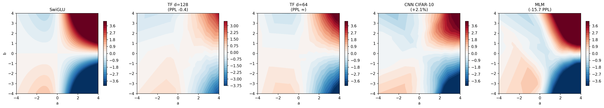
图 A1｜不同任务的训练后二维表面。 这些 Transformer、CNN 和 masked language modeling 检查点的表面不同。要区分任务与外围表示的影响，还需要受控宿主实验。
A.4 参数效率
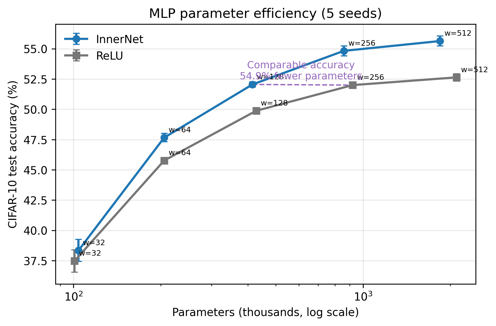
图 A2｜参数效率。 在容量受限的 MLP 中，共享局部函数在较小外围宽度下取得了较高准确率。随着基础网络变宽，差值缩小。
附录 B 负面结果与适用边界
| 设置 | 观察 | 解释 |
|---|---|---|
| RNN，Penn Treebank | InnerNet PPL 约 169 至 179，tanh 约 140 | 二元局部单元不能替代稳定循环动力学 |
| GPT 从头训练 | InnerNet 落后 GELU 和 SwiGLU | 模型增大后优化负担超过有限预算内的收益 |
| Qwen2.5-0.5B 直接替换 | 准确率约从 89% 降至 80% | 成熟大模型不适合无过渡地更换局部算子 |
| ResNet 全部位置替换 | 整体持平 | 残差通路已经提供部分调制与信息保留 |
| Sequential MNIST gate 拟合 | 标准 sigmoid gate 的 R² 不稳定 | 功能成功不能直接解释为唯一门控机制 |
附录 C 实验追溯
原论文复现配置位于
config/experiments/mlp_*.yaml
与
config/experiments/cnn_*.yaml。
Transformer 主实验位于
config/experiments/transformer_wikitext_*.yaml，
hidden-width 消融位于
config/experiments/transformer_wikitext_2arg_innerh{8,16,64}.yaml。
宿主替换矩阵汇总见
results/audit/causal_matrix_summary.json，
hidden-width 汇总见
results/audit/inner_hidden_ablation.json，
部署分析见
results/audit/deploy_analysis.json，
计算成本见
results/audit/compute_cost_profile.json。
完整数值与实验目录模式记录在
RESULTS_CN.md
和
docs/paper_results.md。
附录 D 成稿前编辑备注
参考文献
- Yoon, K., Orhan, E., Kim, J., and Pitkow, X. Two-Argument Activation Functions Learn Soft XOR Operations Like Cortical Neurons. IEEE Access, 2022。本地论文 PDF。 本文工作的直接起点：提出共享二输入 InnerNet，并在 MLP 与 CNN 中观察到软 XOR 类表面、性能与鲁棒性收益。
- Gidon, A. 等。 Dendritic Action Potentials and Computation in Human Layer 2/3 Cortical Neurons. Science, 2020。 在人类皮层树突中观察到可区分线性不可分输入的事件，为 XOR-like 树突计算提供实验依据。
- Lin, M., Chen, Q., and Yan, S. Network In Network. ICLR, 2014。 用局部小型 MLP 替代线性滤波，是 micro-network 架构的早期代表，但不分析共享二元标量函数。
- He, K., Zhang, X., Ren, S., and Sun, J. Delving Deep into Rectifiers: Surpassing Human-Level Performance on ImageNet Classification. ICCV, 2015。 提出 PReLU，只学习负半轴斜率，代表低自由度可学习激活函数。
- Ramachandran, P., Zoph, B., and Le, Q. V. Searching for Activation Functions. arXiv:1710.05941, 2017。 从预定义一元和二元 primitive 的组合中搜索激活公式，并发现 Swish。
- Bingham, G. and Miikkulainen, R. Discovering Parametric Activation Functions. Neural Networks, 2022。 PANGAEA 结合进化搜索与梯度优化，并报告不同架构偏好不同的参数化激活函数。
- Liu, H., Brock, A., Simonyan, K., and Le, Q. V. Evolving Normalization-Activation Layers. NeurIPS, 2020。 从基础操作中搜索归一化与激活的联合结构，最终得到可直接执行的 EvoNorm 公式。
- Ma, N., Zhang, X., Liu, M., and Sun, J. Activate or Not: Learning Customized Activation. CVPR, 2021。 ACON 学习非线性状态与近线性状态之间的切换，meta-ACON 进一步让参数依赖输入上下文。
- Dai, Y. 等。 Attention as Activation. arXiv:2007.07729, 2020。 把局部跨通道信息放进激活计算，是 context-aware activation 的相邻方法。
- Molina, A., Schramowski, P., and Kersting, K. Padé Activation Units: End-to-end Learning of Flexible Activation Functions in Deep Networks. ICLR, 2020。 用低阶有理函数学习紧凑的一元激活，兼顾函数自由度和闭式表达。
- Bohra, P. 等。 Learning Activation Functions in Deep (Spline) Neural Networks. IEEE Open Journal of Signal Processing, 2020。 用 B-spline 学习自由形态的一元激活，并通过正则化控制复杂度。
- Liu, Z. 等。 KAN: Kolmogorov-Arnold Networks. ICLR, 2025。 在网络边上学习一元 spline，并通过剪枝与 symbolification 提取简单表达式。
- Liu, H., Simonyan, K., and Yang, Y. DARTS: Differentiable Architecture Search. ICLR, 2019。 把候选操作的离散选择连续松弛，再用梯度优化结构参数。
- Real, E., Liang, C., So, D. R., and Le, Q. V. AutoML-Zero: Evolving Machine Learning Algorithms From Scratch. ICML, 2020。 从基本数学 primitive 搜索完整学习算法，其搜索范围覆盖模型、损失和更新规则。
- Wei, T., Wang, C., Rui, Y., and Chen, C. W. Network Morphism. arXiv:1603.01670, 2016。 通过保函数变换把成熟网络迁移到更大结构，为本文的 warm-start 设计提供方法背景。
- Hochreiter, S. and Schmidhuber, J. Long Short-Term Memory. Neural Computation, 1997。 用乘法门控制记忆写入、保留和读取，建立了多输入门控的经典范式。
- Cho, K. 等。 Learning Phrase Representations using RNN Encoder-Decoder for Statistical Machine Translation. EMNLP, 2014。 提出 GRU，用更紧凑的门控结构稳定循环状态更新。
- Dauphin, Y. N., Fan, A., Auli, M., and Grangier, D. Language Modeling with Gated Convolutional Networks. ICML, 2017。 GLU 用两路线性投影和逐元素乘法构成门控，是 InnerNet 二输入形式的直接工程参照。
- Shazeer, N. GLU Variants Improve Transformer. arXiv:2002.05202, 2020。 系统比较 GLU 变体并提出 SwiGLU；本文在 Transformer 实验中把它作为主要基线。
- Jayakumar, S. 等。 Multiplicative Interactions and Where to Find Them. ICLR, 2020。 把 gating、attention、hypernetwork 和动态卷积统一解释为乘法交互。
- Poirazi, P., Brannon, T., and Mel, B. W. Pyramidal Neuron as Two-Layer Neural Network. Neuron, 2003。 详细区室模型显示，非线性树突子单元可形成类似两层网络的单神经元计算。
- Beniaguev, D., Segev, I., and London, M. Single Cortical Neurons as Deep Artificial Neural Networks. Neuron, 2021。 复现主动树突神经元的输入输出映射需要较深时序网络，说明单神经元具有较高计算复杂度。
- Larkum, M. E., Zhu, J. J., and Sakmann, B. A New Cellular Mechanism for Coupling Inputs Arriving at Different Cortical Layers. Nature, 1999。 给出不同皮层层次输入通过树突事件发生非线性耦合的实验依据。
- Cranmer, M. 等。 Discovering Symbolic Models from Deep Learning with Inductive Biases. NeurIPS, 2020。 先训练神经模型，再对内部模块做 symbolic regression，并用闭式方程替换原模块。
- Sahoo, S., Lampert, C., and Martius, G. Learning Equations for Extrapolation and Control. ICML, 2018。 从预定义数学 primitive 中学习稀疏方程，目标是恢复具有外推能力的解析关系。
本页是中文论文草稿的保留结构修订版。正文数据来自项目的 canonical 实验记录与原始结果审计。